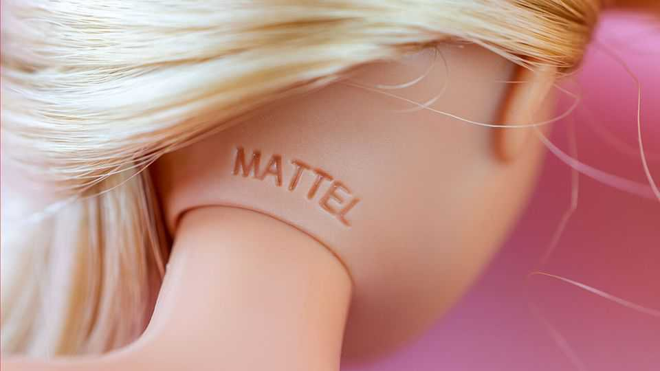

The company behind Barbie wants to be an entertainment giant
But Mattel remains a struggling toymaker

Nov 12th 2026
Games are afoot at Mattel. In recent weeks the business behind Barbie dolls and Hot Wheels cars, which has seen its market value plunge by 20% this year, has replaced its chief executive and much of its leadership team. Big shareholders are calling for a sale. Interested buyers are said to include Zuru, a maker of water pistols, and Authentic Brands, custodian of trademarks from Care Bears to Juicy Couture. Mattel’s new boss is instead counting on remaking it from a traditional toymaker into a buzzy entertainment firm.
It is a bad time for producers of playthings. The Iran war has sent commodity prices soaring. Toys of the sort Mattel makes require plastic, and plastic requires crude oil. Parents, feeling the pinch from inflation, are turning stingy. In a recent survey by Mintel, a research firm, 65% of toy buyers said price is now their top consideration. Many are turning to retailers’ cheaper own-brand alternatives.
The challenges go deeper still. Anthony Bonadio of Wells Fargo, a bank, reckons the industry is in structural decline. Birth rates are falling and children are abandoning toys at ever-younger ages. On average, American children aged between eight and 18 spend 7.5 hours per day on screens, leaving little time for physical toys.
Global sales have grown at a meagre compound annual rate of 3% over the past decade, mostly through higher prices, according to UBS, another bank. Even that overstates things. Circana, a data provider, points out that much of the growth has been in categories where nostalgic adults are propping up sales. That includes trading-card games (think Hasbro’s “Magic: The Gathering”) and building sets (Lego).
The pattern is reflected at Mattel. On November 5th it reported that sales of Hot Wheels (another favourite of kidults) were up by 6% in the third quarter, year on year. But those for Barbie were down by 10%, and Fisher-Price, a brand for infants, plunged by 15%. The company slashed its annual forecast for sales and profits.
It will fall to Mattel’s new leadership to bring back the joy. Roger Lynch, who took over as its boss last month, previously ran Condé Nast, publisher of Vogue. Before that, he was in charge of Pandora, a music-streaming service. On his first earnings call he said that what drew him to Mattel was what had drawn him to Condé Nast: its intellectual property (IP). UBS reckons Mattel’s stable of names is worth $8.7bn, nearly double its current market value. They could form the basis of lucrative films, video games and live experiences.
To date, Mattel has struggled to make use of this treasure trove. “Barbie”, the top-grossing film of 2023, boosted operating profit by around $100m (or 15%) that year. But the uplift in doll sales was short-lived. “It was more about ladies dressing up in pink and showing up at the movies,” says Jaime Katz of Morningstar, a research firm. Mattel’s latest films, “Masters of the Universe” and “Matchbox: The Movie”, have been flops.
Video games have also been a disappointment. In 2018 Mattel set up a mobile-gaming studio in collaboration with NetEase, a Chinese gaming giant; this year it acquired its partner’s 50% stake in the venture. But releases such as UNO! Mobile, based on the card game, have been better at attracting eyeballs than generating money. Because mobile games are cheap to make—more so now with the rise of artificial intelligence—competition is fierce.
Even so, rivals have had better luck than Mattel cashing in on their IP. Hasbro worked with a video-game studio to produce Monopoly Go!, an adaptation of its infamous board game; the app, released in 2023, generated $41m in royalties for the toymaker in its most recent quarter alone. Mr Lynch will be hoping for similar feats from Mattel’s IP. Barbie may soon be put to work once again. ■